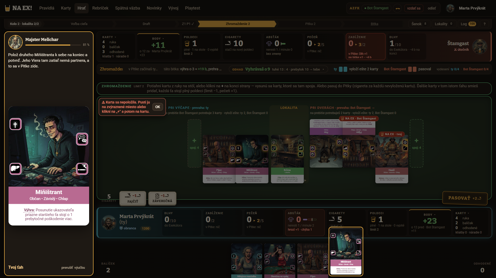
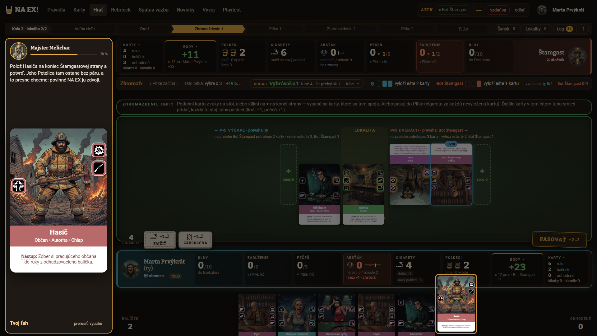
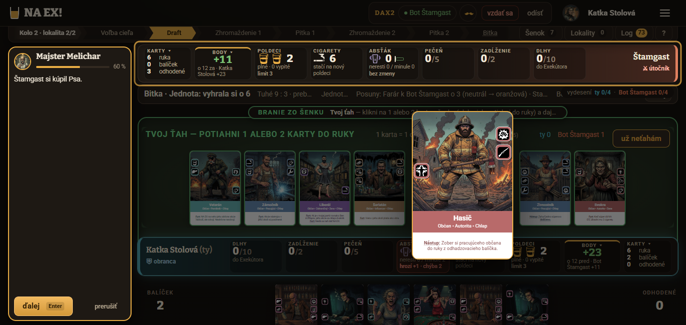
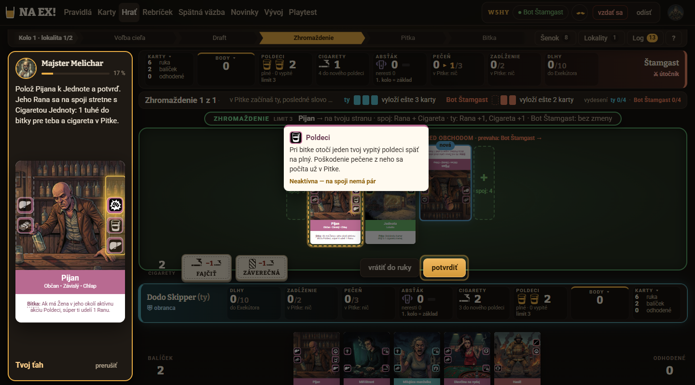
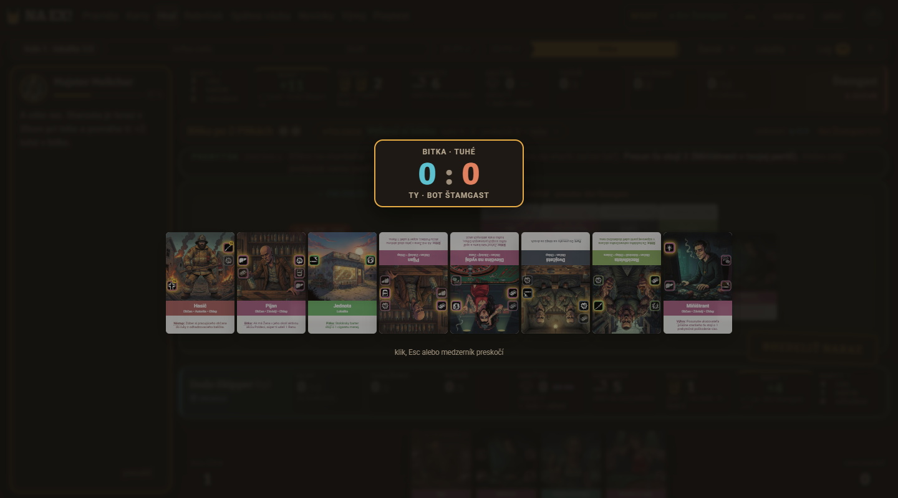

Playtest výučby Prvá hra, kolo 4 · 20261024-122133
1. Verdikt
Áno po opravách, ale cieľ 4. kola nie je splnený: splnené sú dva z troch (test pochopenia 20/24, odmietnutia servera najviac 1 na krok), priemer V1–V10 je 6,3 (cieľ 7, v 3. kole 6,2). Test sa zlepšil o 3 odpovede (17 → 20; otázka 8 „čo by som urobil inak“ 0/3 → 2/3, starší 2/3 → 3/3, cieľ hry 2/3 → 3/3), ale je na hrane: pri prísnejšom čítaní hraničných odpovedí je to 16, pri miernejšom až 24. Známky sa skoro nepohli (6,2 → 6,3): bublina zabrala (V4 5,7 → 7,0, najväčší posun kola, nik už nehlási zakrytý bar ani pokyn), no čitateľnosť stola je stále najnižšia (V9 4,3) a tempo kleslo (V7 6,3 → 5,3), lebo kroky bez bubliny ubehnú bez prečítania a výučba trvá dlhšie (12,3 / 13,4 / 12,6 min oproti 10,8 / 8,5 / 11,4). Nik nemal dlhšie zaseknutie okrem Marty v kroku 72 (64 s, 9 akcií, „Karta sa nepoložila“ pri správnom „+“; podozrenie na chybu ťahania, nepotvrdené).
- Čitateľnosť stola a orezaný horný pás (V9 4,3; 3 z 3): text kariet ~8 px aj pri 1920×1080, súperove karty hore nohami, horný pás s odhadom bitky a fázou „Zhromažde…“ útržkovitý, panel starších ~9 px, pri 1366×650 orezaná ruka. Marta dáva V9 = 3 už tretíkrát po sebe.
- Kroky bez bubliny a animácia bitky pred bublinou (V7 5,3; 3 z 3): Štamgastove a automatické kroky ubehnú naraz (Dodo 52, 56–58, 64, 67, 76, 83; Katka 51–52, 55–58, 63–67, 73, 75–76; Marta ešte 82–83) a bublina stmavená počas animácie bitky (kroky 37, 79) hovorí o výsledku skôr, než ho vidno.
- Slovník v prvom výskyte a dve scenárové diery: „tuhé“ a „poldeci“ v kole 4 stratili definíciu, ktorú mali v kole 3 (Marta: „poldeci som mala za policajtov“), Absťák, Dlh/Zadĺženie, Pohoršenie a patronát ostali bez vety (3/3), otázka 2 o počte Pitiek je 0/3, kroky 31 a 36 (Viera na súperovu stranu, spálenie Dlhov) zmiatli Katku a otázka 87 zlyhala u Katky aj Marty.
2. Porovnanie s 1., 2. a 3. kolom a splnenie cieľa
1. kolo: playtest/vyucba-20261023-161148 (70 krokov), 2. kolo: playtest/vyucba-20261023-183417 (83 krokov), 3. kolo: playtest/vyucba-20261024-064125 (85 krokov), 4. kolo: 89 krokov. Test som hodnotil podľa docs/PRAVIDLA.md rovnakým meradlom ako v 3. kole (sekcia 5 jeho reportu): „správne“ = odpoveď bez podstatnej chyby a bez medzery, ktorú v predošlom kole označili za chýbajúcu (pri cieli hry okamžitá výhra vydesením polovice starších aj mínus za Dlhy a Cirhózu; pri starších smer markera a úroveň strachu; pri Zhromaždení limit plné poldeci + 1; pri priebehu kola poradie fáz, prebytok a počet Pitiek; pri „čo by som urobil inak“ odkaz na plán z krokov 86–88, nie zoznam toho, čo nevie).
6,3 z 10
Cieľ 1: priemer V1–V10 ≥ 7. Chýba 0,7 (1. kolo 4,7, 2. kolo 6,3, 3. kolo 6,2). Dodo 6,8 (+0,1), Katka 6,4 (+0,2), Marta 5,7 (±0,0). Ani jeden nováčik cieľ sám nesplnil. Pozn.: Marta si vo
feedback.md napísala priemer 5,4, jej desať známok však dáva 57/10 = 5,7; používam spočítaný údaj.20 z 24
Cieľ 2: test ≥ 18/24 úplne správne (1. kolo 8, 2. kolo 14, 3. kolo 17). Dodo 7/8, Marta 7/8, Katka 6/8; nik „zle“ ani „nevie“. Prísnejšie čítanie hraničných odpovedí (Dodo otázka 7, Marta otázky 1 a 8, Katka otázka 6) dáva 16, miernejšie (otázka 2 všetkým trom a Katkina 8) až 24. Otázka 2 (priebeh kola, počet Pitiek) je 0/3.
1 / 0 / 0
Cieľ 3: najviac 1 odmietnutie servera na krok (Dodo / Katka / Marta). Dodo 1 na kroku 42 (
k27), zámerne: klikol Starostu namiesto Farára (hláška „Takto nie — ešte chýba: posuň prebytkom staršieho „Farár“; toto teraz nie: … „Starosta““). Ostatné zlé kliky (Krčma v 4, Pes v 9, Hasič na súperovu stranu v 18) ošetril klient, nie server. (1. kolo 6 / 7 / 2, až 6× na jednom kroku; 2. a 3. kolo 2 / 0 / 0.)Organizátor — vplyv na dáta: Dodo na začiatku omylom spustil cudzí pomocný skript zo zdieľaného /tmp/v.sh, ktorý Marte posunul úvodný krok 3 → 4. V akcie.jsonl má po kroku 3 záznam s id kroku 4 (k0) pri nezmenenom počítadle; v denníku má však riadok pre krok 3 aj 4 (jasnosť 2 a 3), takže obsah oboch videla. Dopad je zanedbateľný; kroky 3–4 u Marty hodnotím normálne. Agent naex-novacik je už opravený (commit 0785e76).
Známky V1–V10 po nováčikoch: kolo 1 → kolo 2 → kolo 3 → kolo 4
| Kritérium | Dodo | Katka | Marta | Priemer 1. kolo | Priemer 2. kolo | Priemer 3. kolo | Priemer 4. kolo | Zmena 3 → 4 |
|---|---|---|---|---|---|---|---|---|
| V1 Pochopenie hry | 4 → 6 → 6 → 6 | 4 → 7 → 6 → 6 | 4 → 6 → 5 → 6 | 4,0 | 6,3 | 5,7 | 6,0 | +0,3 |
| V2 Jasnosť pokynov | 4 → 7 → 7 → 8 | 5 → 8 → 6 → 7 | 6 → 5 → 6 → 6 | 5,0 | 6,7 | 6,3 | 7,0 | +0,7 |
| V3 Vysvetlenie "prečo" | 5 → 7 → 6 → 5 | 3 → 8 → 6 → 5 | 5 → 5 → 5 → 5 | 4,3 | 6,7 | 5,7 | 5,0 | −0,7 |
| V4 Bublina Melichara | 3 → 6 → 6 → 7 | 4 → 6 → 5 → 7 | 3 → 4 → 6 → 7 | 3,3 | 5,3 | 5,7 | 7,0 | +1,3 |
| V5 Zvýraznenie | 6 → 6 → 7 → 8 | 5 → 7 → 6 → 7 | 7 → 6 → 7 → 7 | 6,0 | 6,3 | 6,7 | 7,3 | +0,6 |
| V6 Ovládanie | 4 → 6 → 8 → 9 | 4 → 7 → 7 → 7 | 5 → 6 → 6 → 5 | 4,3 | 6,3 | 7,0 | 7,0 | 0 |
| V7 Tempo a dĺžka | 4 → 6 → 7 → 6 | 5 → 7 → 6 → 5 | 5 → 5 → 6 → 5 | 4,7 | 6,0 | 6,3 | 5,3 | −1,0 |
| V8 Tón a postava Melichara | 7 → 8 → 8 → 7 | 6 → 7 → 7 → 8 | 7 → 8 → 7 → 7 | 6,7 | 7,7 | 7,3 | 7,3 | 0 |
| V9 Čitateľnosť stola | 4 → 5 → 5 → 5 | 3 → 6 → 6 → 5 | 4 → 3 → 3 → 3 | 3,7 | 4,7 | 4,7 | 4,3 | −0,4 |
| V10 Chuť hrať | 5 → 7 → 7 → 7 | 5 → 8 → 7 → 7 | 6 → 6 → 6 → 6 | 5,3 | 7,0 | 6,7 | 6,7 | 0 |
| Priemer V1–V10 | 4,6 → 6,4 → 6,7 → 6,8 | 4,4 → 7,1 → 6,2 → 6,4 | 5,2 → 5,4 → 5,7 → 5,7 | 4,7 | 6,3 | 6,2 | 6,3 | +0,1 |
Najviac vzrástli V4 bublina (+1,3; pevné miesto vľavo, nik nehlási zakrytie), V2 jasnosť pokynov (+0,7) a V5 zvýraznenie (+0,7; presné zvýraznenie kroku 74, hláška pomenuje starešinu). Najviac klesli V7 tempo (−1,0; preskakované kroky, 89 krokov, dlhší čas) a V3 „prečo“ (−0,7; Dodo 6 → 5, Katka 6 → 5; „prečo“ ostalo len pri NA EX a Cirhóze). V9 čitateľnosť stola je najnižšia štvrté kolo po sebe (3,7 → 4,7 → 4,7 → 4,3) a V3 „prečo“ 5,0 je druhá najnižšia.
Test pochopenia po otázkach: kolo 1 → kolo 2 → kolo 3 → kolo 4
S = úplne správne, Č = čiastočne. Dôvody sú v sekcii 5.
| Otázka | Dodo | Katka | Marta | Spolu 3. → 4. kolo | Zmena |
|---|---|---|---|---|---|
| 1 Cieľ hry | Č Č S → S | S Č S → S | Č Č Č → S | 2/3 → 3/3 | +1 |
| 2 Priebeh kola | Č S S → Č | S S S → Č | Č Č Č → Č | 2/3 → 0/3 | −2 |
| 3 Zhromaždenie | Č S S → S | Č S S → S | Č S Č → S | 2/3 → 3/3 | +1 |
| 4 Pitka a NA EX | S S S → S | Č S S → S | Č S S → S | 3/3 → 3/3 | 0 |
| 5 Bitka | S S S → S | Č S S → S | S S S → S | 3/3 → 3/3 | 0 |
| 6 Starší | Č Č S → S | Č Č S → S | Č Č Č → S | 2/3 → 3/3 | +1 |
| 7 Poldeci a cigarety | S S S → S | S S S → S | S S S → S | 3/3 → 3/3 | 0 |
| 8 Čo by urobil inak | Č Č Č → S | Č Č Č → Č | Č Č Č → S | 0/3 → 2/3 | +2 |
| Spolu | k3 7 → 7/8 | k3 7 → 6/8 | k3 3 → 7/8 | 17 → 20/24 | +3 |
Najväčší posun: otázka 8 „čo by som urobil inak“ (0/3 po tri kolá → 2/3; Dodo aj Marta teraz hovoria, ako by hrali: pečeň, NA EX na Petelicu bez páru, tlačiť starších do červenej) a otázky o Marte (3/8 → 7/8: limit Zhromaždenia, mínus za Dlhy a Cirhózu, starší). Jediná otázka, ktorá je 0/3: priebeh kola (počet Pitiek). Dodo uviedol, že nevie, prečo dve Pitky a ako sa určuje ich počet, hoci krok 30 hovorí „koľko ich bude, určuje lokalita“.
Ostatné ukazovatele
| Ukazovateľ | 1. kolo | 2. kolo | 3. kolo | 4. kolo |
|---|---|---|---|---|
| Kroky scenára | 70 | 83 | 85 | 89 (19 bez textu, 28 Štamgast, 9 „hra za teba“, 7 otázok) |
| Dĺžka (Dodo / Katka / Marta) | 11,8 / 16,7 / 11,6 min | 12,5 / 11,1 / 12,8 min | 10,8 / 8,5 / 11,4 min | 12,3 / 13,4 / 12,6 min |
| Akcie | 140 / 162 / 113 | 126 / 113 / 111 | 118 / 97 / 127 | 125 / 134 / 127 |
| Odmietnutia servera | 6 / 7 / 2 | 2 / 0 / 0 | 2 / 0 / 0 | 1 / 0 / 0 |
| Najdlhší krok | krok 17: 265 s, 40 akcií (Katka) | krok 31: 75–100 s, 9–12 akcií | krok 5 (Smetisko): 14–28 s, 5–6 akcií | krok 72 Marta 64 s, 9 akcií; krok 5 Katka 41 s, 7 akcií; ostatné ≤ 24 s |
| Sebahodnotenie „koľko viem“ (Dodo / Katka / Marta) | všetci ~35 % | 60 % / 65 % / 55 % | 55 % / 55–60 % / 45 % | 55 % / 55 % / 60 % |
| Kontrolné otázky počas výučby (napoprvé správne) | nebolo | 4/4, 4/4, 3/4 | 3/5, 5/5, 5/5 (13/15) | Dodo 6/7 (krok 39 zámerne zle), Katka 6/7 (krok 87), Marta 5/7 (39 omylom, 87) — 17/21 |
| Rozhodnutia „vyber sám“ správne napoprvé | nebolo | krok 31: 0/3, 65: 0/3, 70: 2/3, 74: 3/3 | krok 30: 3/3, 67: 0/3, 72: 2/3, 76: 3/3 | krok 31 (Viera): 3/3 (Dodo hádal), 69 (odpoveď kartou, teraz príkaz): 3/3, 74: 3/3, 78 („bez odpovede“): 3/3 |
Čo z opráv po 3. kole zabralo (S1–S7, U1–U6)
Číslovanie je zo sekcie „Opravy pre kolo 4“ reportu 3. kola. Stav určený z denníkov, feedbackov, snímok a z prva-hra.json. Zo 13 opráv zabrali 4 (S1, S3, S4, U1), 5 čiastočne (S2, S5, S7, U3, U6) a 4 nezabrali (S6, U2, U4, U5).
| Oprava | Stav | Čo ukázalo 4. kolo |
|---|---|---|
| S1 Plán do prvej partie ako rozhodovanie | zabralo | Pribudli otázky 86 a 87 (q-plan-naex, q-plan-starsi), Dedičstvo, Záverečná a patronát z plánu zmizli. Otázka 8 sa posunula z 0/3 na 2/3 (Dodo, Marta uvádzajú prvky plánu). Otázka 86 napoprvé 3/3; otázka 87 len 1/3 (Dodo uhádol, Katka a Marta zle) — pozri sekciu 7. Zostáva „pečeň drž pod tromi“ proti prahu 5 na Krčme (Marta, Katka). |
| S2 Hrany kariet a slovník v prvom výskyte | čiastočne | Pribudol krok 8 o hranách a veta o Absťáku v kroku 3, sekera má vetu v 38, priazeň v 41, Smetisko „prečo“ v 5. Ale krok 8 má 39 slov a 3/3 ho označili za hutný (jasnosť 2/2/2), „tuhé“ stratilo definíciu (v kole 3 bola v kroku 8; dnes ju Katka a Marta hľadajú), Absťák zostal nepochopený (Dodo, Katka), Pohoršenie, Dlh, Zadĺženie a patronát (krok 49) bez vety (3/3), ikony nemajú názvy na obrazovke. |
| S3 Starší: jeden obraz, úrovne, pauza pred prvým pohľadom | zabralo | Krok 35 „teraz ti ukážem starších“ je samostatný a krok 41 hovorí jeden obraz; otázka 6 stúpla z 2/3 na 3/3, otázky 45 a 46 3/3 napoprvé. „Paradox“ už nik nepísal (Katka: „pekné vysvetlenie prečo“, Dodo „protiintuitívne“). Ostáva Marta v kroku 35 (jasnosť 1: osem starších s drobným textom naraz) a otázka 87. |
| S4 Odpoveď kartou na NA EX (krok 67) | zabralo | Nový krok 69 je príkaz s odhadom 12 : 5 → 13 : 4 a kritériom „oplatí sa, keď spojí akciu bez páru“: 3/3 správne za 2 akcie a 2–8 s (v kole 3 0/3). Rozhodnutie „vyber sám“ je až v 78 a 3/3 zvolili „bez odpovede“; Katka (jasnosť 2) však píše, že nevedela, čo hľadať. |
| S5 Texty, ktoré nesedia s UI | čiastočne | Odpočet „Vrátiť vyprchať“ a „potvrď Skončiť Pitku“ sú preč (nik nehlásil), čísla Rana 1 / Pecka 2 / Petelica 3 sú v otázke 39, „bitku pravdepodobne vyhráš“ opravené (Katka a Marta chcú vidieť skóre). Zostáva „Viac tuhého berie Jednotu“ (krok 38; 3/3 nezrozumiteľné), „ľavá hrana, tá s Cigaretou“ v kroku 4 (3/3 nepochopili ako pri kole 3) a Pitky: veta „koľko ich bude určuje lokalita“ (krok 30) nepomohla — otázka 2 je 0/3. |
| S6 Automatické kroky: zhrnutie pred reťaz | nezabralo | Krok 49 „hra za teba…“ je pred reťazou a znie ako vysvetlenie, ale 3/3 v ňom narazili na neznámy „patronát“ (jasnosť 2/2/2). Kroky bez bubliny stále ubehnú bez prečítania: Dodo 52, 56–58, 64, 67, 76, 83; Katka 51–52, 55–58, 63–67, 73, 75–76; Marta 51–52, 55–58, 63–64, 66–67, 75–76, 82–83. |
| S7 Úvod 1–3 a drobnosti | čiastočne | Krok 2 skrátený na lištu kola (jasnosť 4/5/5, v kole 3 3/3/2), „cigarety 12“ vysvetlené v 84. Ale krok 3 (bar: poldeci, limit, cigarety, Absťák) je s jasnosťou 2/2/2 najhorší z úvodu a „ľavá hrana“ v 4 ostáva. Marta má dodnes problém s poldeci („mala som za to, že sú to policajti“). |
| U1 Bublina nesmie zakrývať bar, pokyn a lištu | zabralo | Bublina je od ui/vyucba-4 na pevnom mieste vľavo, „ďalej“ je vždy na rovnakom mieste: nik nehlásil zakrytý bar, pokyn ani lištu (v kole 3 3/3). V4 5,7 → 7,0 (+1,3), najväčší posun kola. Drobnosť: pri 1366×650 zaberá veľká karta v bubline polovicu panelu (Katka). |
| U2 Lupa karty po ťahu sa zruší | nezabralo | 3/3 stále hlásia lupu/tooltip, ktorý zostane na stole: Dodo 031 (tooltip Poldeci po potiahnutí zakrýva stred stola), Katka 051–053 a 062 („lupa Hasiča sa objavila sama, myš ostala nad kartou“), Marta „obrovský náhľad karty pri myši zakryje líniu“. Nezakryla však tlačidlo „NA EX!“ ani „potvrdiť“ (v kole 3 áno) — zlepšenie, nie oprava. |
| U3 Zvýraznenia: jedna vec naraz | čiastočne | Krok 74 (NA EX na kartu s Vierou) svieti na jednu kartu (Dodo, Marta: „zvýraznenie pomohlo“), hláška pri zlom kliku pomenuje starešinu (Dodo, krok 42). Zostáva Log v kroku 47 bez dôvodu (3/3), viac kariet v ruke v kroku 31 (Dodo: 3 Viery) a 78 (Katka: celá ruka), pri kroku 35 celý panel starších (Dodo, Katka), pri 41 „Bitkár +1“ namiesto Farára (Marta). |
| U4 Čitateľnosť stola pre veľké rozlíšenie | nezabralo | V9 4,7 → 4,3 (Marta 3 po tretíkrát na 1920×1080). Text kariet ~8 px, súperove karty hore nohami (3/3), horný pás orezaný (3/3), panel starších ~9 px (Dodo), „BODY +11 · o 7 pred“ po vyhratej bitke stále zavádza (Dodo, Katka 37). Pri 1366×650 je ruka orezaná od začiatku (Katka). |
| U5 Po ťahu nepreskakovať 3–5 krokov naraz | nezabralo | Hlásia to všetci traja ako v kole 3 (zoznam v S6) a V7 klesla 6,3 → 5,3 (−1,0). Animácia bitky (krok 37, 79) beží s bublinou stmavenou a hovorí o výsledku skôr, než ho vidno (3/3). |
| U6 Drobnosti ovládania | čiastočne | „ďalej“ je na stabilnom mieste (Marta už nehlási presun). Kláves N pred výberom karty a K bez účinku stále nepovedia nič (Dodo 20, 23). Hotové: pečať NA EX! Marta našla bez problémov. Nový nález: „Karta sa nepoložila“ pri správnom „+“ (Marta, krok 72). |
3. Nováčikovia
| Postava | Rozlíšenie | Dokončil | Dĺžka | Akcií | Chyby servera | Test (úplne správne) | Sebahodnotenie |
|---|---|---|---|---|---|---|---|
| Dodo Skipper (nováčik 1) — študent, netrpezlivý (zameranie: ovládanie a tempo) | 1440×800 | áno, 89 z 89 | 12,3 min | 125 | 1 (krok 42, zámerné) | 7 z 8 | 55 % |
| Katka Stolová (nováčik 2) — projektová manažérka, systematická (zameranie: pochopenie hry) | 1366×650 | áno, 89 z 89 | 13,4 min | 134 | 0 | 6 z 8 | 55 % |
| Marta Prvýkrát (nováčik 3) — učiteľka na dôchodku, poctivá čitateľka (zameranie: zrozumiteľnosť textu) | 1920×1080 | áno, 89 z 89 | 12,6 min | 127 | 0 | 7 z 8 | 60 % |
4. Známky V1–V10
| Kritérium | Dodo | Katka | Marta | Priemer ▾ |
|---|---|---|---|---|
| V1 Pochopenie hry | 6Dodo: Viem rámec a ako vyhrať, ale detaily (absťák, dlhy, priazeň, patronát, šenok) mi uniknú; od kola 2 som ťahy robil podľa pokynov bez chápania. | 6Katka: Jadro (spoje, NA EX, bitka, starší) sedí. Vedľajšie systémy sa menia na obrazovke bez vysvetlenia (Zadĺženie, Dlh, Absťák, Patronát, Povera). | 6Marta: Hlavná myšlienka (spoj akcií, NA EX, bitka, starší ako strach) sa naučí. Medzery: poldeci, Zhromaždenie, Pohoršenie, patronát, prečo sú dve Pitky. | 6,0 |
| V2 Jasnosť pokynov | 8Dodo: Takmer vždy bolo zrejmé, čo kliknúť a čo potiahnuť. Slabé: "za Pijana", "ľavá hrana", "k sebe na koniec". | 7Katka: Väčšinou „polož X sem, potvrď“. Zlé miesta: krok 31 (Viera na súperovu stranu) a krok 78 (odpoveď bez nápovedy). | 6Marta: Väčšina krokov je jasná („Klikni už neťahám“). Slabé miesta: „potvrď, neotáčaj ju“ (krok 4), „k sebe na koniec“ (krok 72: tri pokusy), „za Pijana“ (krok 18), ktorá strana je ľavá/pravá nikdy nepovedané. | 7,0 |
| V3 Vysvetlenie "prečo" | 5Dodo: Niekde dobré (NA EX nie je zadarmo, prečo tlačiť starších), inde len prikazuje a hádže pojmy bez definície (patronát, absťák, Dlh, zdražuje). | 5Katka: Dobre: NA EX stojí pečeň (28), prečo pasovať (20). Chýba: prečo obranca volí cieľ, prečo kupuje útočník prvý, prečo kladiem kartu na súperovu stranu, prečo sa vzdialenosť starších oplatí. | 5Marta: Dobré: krok 28 (NA EX nie je zadarmo) a 41 (starší k súperovi = bojí sa ma). Chýba prečo pasovať, prečo je Pitka dvakrát, čo je Pohoršenie, kto sú „starší“, kým sa v kroku 35 objavia všetci naraz. | 5,0 |
| V4 Bublina Melichara | 7Dodo: Čitateľná, nezakrýva stôl, veľká karta v bubline je výborná. Pri bitke bola bublina neskoro/rozchádzala sa s animáciou; kroky 3, 8, 22 sú príliš hutné. | 7Katka: Čitateľná, vľavo, nezakrýva stôl. Veľká karta v bubline je užitočná, ale pri 650 px výške zaberá polovicu panelu. | 7Marta: Text 17–18 px, dobrý kontrast, na ľavom boku, nezakrýva stôl. Obrázok karty pod textom je dobrý. Ale text je občas dlhý (4 riadky s 5 novými pojmami) a pri animáciách bitky je bublina stlmená a nečitateľná. | 7,0 |
| V5 Zvýraznenie | 8Dodo: Zvyčajne presné (karta, tlačidlo, panel); občas zvýrazní vedľajšie (Log pri kroku 47, viac kariet v ruke v kroku 31). | 7Katka: Presné (karty, tlačidlá). Zlé: v kroku 78 zvýraznená celá ruka, v kroku 35 celý panel starších. | 7Marta: Ikony poldeci/cigarety, Pečeň, lišta kola, Starosta/Farár sú zvýraznené presne. Slabšie: „Log“ pri zhrnutí kola 1, tlačidlo „hotovo“/„potvrdiť“ zvýraznené až po kliku, pri hovore o Rane/Petelici nezvýraznená konkrétna ikona. | 7,3 |
| V6 Ovládanie | 9Dodo: Ťahanie aj klik fungujú, skratky P/K/N/1-3/Enter sú napísané a fungujú. Zlý klik: výučba zablokuje s vysvetlením (Starosta, Hasič na súperovu stranu). Minus: zlá karta v šenku sa vezme hneď bez varovania; K/N bez efektu nedajú žiadnu hlášku. | 7Katka: Ťahanie a potvrdenie funguje, tlačidlá „hotovo“, „Končím“, „NA EX!“ sú veľké. Zlé miesto = netrafila som cieľový slot pri prvom ťahu Smetiska. Odpovede na otázky nemajú viditeľné číslo na klik. | 5Marta: Potiahnutie karty funguje, no raz hlásilo „Karta sa nepoložila“ pri správnom mieste. Zlé miesto = červená hláška aj sivý rámik na rôznych miestach. „Vrátiť do ruky (pravý klik)“ je skryté. Tlačidlo ďalej/Enter fungovalo vždy. Klik + potom klik na kartu zachránil. | 7,0 |
| V7 Tempo a dĺžka | 6Dodo: 89 krokov je pre Doda veľa; úvod (1-8) a starší (40-47) sú pomalé, druhé kolo je rýchlejšie. Pri čakaní na bota mi `pockaj 3` minul 4-5 krokov naraz. | 5Katka: 89 krokov. Začiatok pomalý, no pri nových pojmoch (tuhé, Dlh, Zadĺženie) príliš rýchly. Pár krokov prebehne za mňa bez bubliny (51-52, 55-58, 63-67, 73, 75-76) a stratím niť. | 5Marta: 89 krokov je dlho (nič som nehrala asi 30 krokov, len „ďalej“). Prvých 10 krokov hustý text, potom opakovanie rovnakých úkonov (pasuj, končím, kúp Hasiča 2×). Kroky 51–52, 55–58, 63–64, 66–67, 75–76, 82–83 prebehli samé bez bubliny. | 5,3 |
| V8 Tón a postava Melichara | 7Dodo: Krčmový tón sedí, krátke hlášky bavia; humoru by mohlo byť viac, text je skôr suchý. | 8Katka: Stručný, pubový, neotravný („Na zdravie!“). Hlášky o Cirhóze sú dobré. | 7Marta: Hravý, krátke vety, „Na zdravie!“ a „Štamgast sa z toho vyspí“ sedia. Občas odborný žargón bez vysvetlenia („tuhé“, „na sekeru“, „zíde sa“). Oslovenie tykaním je v poriadku. | 7,3 |
| V9 Čitateľnosť stola | 5Dodo: Hrany kariet sú drobné ikony, súperove karty sú hore nohami, 8 starších s písmom ~9 px, lišty orezané vľavo, veľa čísel (13:4, +23, ±21 b) bez legendy. | 5Katka: Drobné ikony na hranách kariet pri 1366×650 sa nedajú rozoznať. Panel starších je hustý. Veľa čísel v paneli (Zadĺženie, Pečeň, Absťák, Dlhy) naraz. | 3Marta: Najväčší problém. Karty na stole majú text ~8 px, Štamgastove sú hore nohami, bitka ukazuje 8 kariet s odstavcami 11 px, horný pás 2 riadky drobného písma (a niekedy orezaný: „Zhromaždeˑ“, snímky 079, 085, 094). Stôl sa dá čítať len cez náhľad karty po prejdení myšou. Na 1920×1080! | 4,3 |
| V10 Chuť hrať | 7Dodo: Výhra 45:11 a rozpis bodov motivujú; chcem skúsiť proti botovi, ale vidím vysokú krivku učenia. | 7Katka: Chcem skúsiť sama, hlavne NA EX a spoje. Odrádza ma množstvo pojmov. | 6Marta: Rada by som to skúsila proti botovi, ale partia bola prečítaná a hra rozhodla za mňa (šenok, pasovanie, rozdelenie prebytku). Pocit „som tu šikovná“ mi chýbal. | 6,7 |
Zhodli sa na najlepšom: bublina (V4: 7 / 7 / 7) a tón Melichara (V8: 7 / 8 / 7) — „čitateľná, vľavo, nezakrýva stôl“; na najslabšom: čitateľnosť stola (V9: 5 / 5 / 3) a „prečo“ (V3: 5 / 5 / 5). Rozišli sa v ovládaní (V6: Dodo 9, Katka 7, Marta 5): Dodo oceňuje skratky P, K, N, Enter, 1–3 a ťahanie, Marta narazila na „Karta sa nepoložila“ pri správnom „+“ a skryté „vrátiť do ruky (pravý klik)“. Podľa štýlu: netrpezlivý Dodo hodnotí najvyššie (6,8) — pomáhajú mu skratky, kvíz s okamžitým vysvetlením a rýchle druhé kolo, trápi ho dĺžka a preskakované kroky; poctivá čitateľka Marta s najväčším rozlíšením najnižšie (5,7): trápi ju, že stôl sa dá čítať len cez náhľad karty, nevysvetlené slová a že „hra rozhodla za mňa“ (V10 6); systematická Katka (6,4) pýta „prečo“ a stráca niť pri nových číslach v paneli (V3 5, V7 5).
5. Test pochopenia
Odpovede sú overené proti docs/PRAVIDLA.md (§1, §2, §5–§10, §14) rovnakým meradlom ako v 3. kole. Spolu: 20 správne, 4 čiastočne, 0 zle, 0 nevie z 24 (1. kolo 8, 2. kolo 14, 3. kolo 17). Dodo 7 z 8, Marta 7 z 8, Katka 6 z 8. Nováčikovia si sami tipli 6/8, 5/8 a 5/8 — prísnejšie než ja.
| Otázka | Dodo | Katka | Marta |
|---|---|---|---|
| 1 Cieľ hry | správnebody za lokality, starších a cigarety; Cirhóza a Dlhy berú; „vydesím polovicu (4) a udržím ich kolo, vyhrám hneď“ | správnerovnako; „neviem, či to platí aj v normálnej partii“ (dve kolá z výučby) — nepodstatné | správneokamžitá výhra, tri zdroje bodov aj mínus za Cirhózu a Dlhy (v 3. kole chýbalo); hraničné: „celkom neviem, čo je udržať ich kolo“ |
| 2 Priebeh kola | čiastočneporadie fáz správne, ale dve Pitky berie ako fakt: „prečo dve Pitky a ako sa určuje ich počet: neviem“ (správne 1 + menší z počtov aktivovaných akcií lokality, §7 Počet Pitiek); prebytok spomenul až v otázke 5 | čiastočneporadie správne („draft/šenok → Zhromaždenie → Pitka → znova → bitka → víťaz tlačí starších prebytkom“), počet Pitiek pevne „dve“, nespomenula, že ho určuje lokalita (krok 30 to hovorí) | čiastočneporadie správne, „dvakrát, ale nevedela som prečo“; prebytok až v otázke 5 |
| 3 Zhromaždenie | správnestriedavo, spoj v rovnakej výške, limit plné poldeci + 1, pas = cigareta za nevyloženú kartu | správnerovnako, aj na súperovu stranu („prečo, neviem“ — v §6 to otázka porozumenia, nie pravidlo) | správnelimit „plné poldeci + 1“ už vie presne (v 3. kole „podľa poldecí“); vľavo/vpravo, pas za cigaretu |
| 4 Pitka a NA EX | správnezruší spojené, zdvojí osamotené, stojí poldeci a plní pečeň → Cirhóza berie body | správnerovnako + súper môže hneď odpovedať jednou kartou | správnerovnako + fajčiť, doliať |
| 5 Bitka | správnetuhé Rana 1, Pecka 2, Petelica 3, platia len spojené; remíza „na sekeru“ (vezme ju víťaz ďalšej bitky); prebytok posúva starších | správnetuhé zo spojených akcií, remíza ide na sekeru, rozdiel = prebytok; Pohoršenie a Dlh v bitke priznáva, že nevie (mimo meradla) | správnerovnako, sekera = „vezme si ju víťaz ďalšej bitky“ |
| 6 Starší | správnetlačí k súperovi, tam sa boja jeho, za strach body; „priazeň súpera: malý bonus“ | správneďalej od stredu = väčší strach, červená = vydesený; súper dostane priazeň; hraničné: „čím ďalej, tým viac bodov“ je zjednodušenie (§10, §14: body idú podľa scorecardu, nie podľa úrovne) | správnetlačí od seba, súper dostane priazeň, bojí sa jej, červená = body, štyria vydesení = výhra; pri kontrolnej otázke 87 sa napoprvé pomýlila |
| 7 Poldeci a cigarety | správnepoldeci plný/vypitý, určuje limit a NA EX; cigarety platia šenok, fajčenie, na konci body; hraničné: „2 cigarety = nový poldeci“ (správne: 2 = doliať vypitý, 5 = nový, §7) | správnepoldeci pohár, limit, NA EX; cigarety šenok a fajčenie; hraničné: „1 bod za kus“ (správne kus = 3 cigarety, §14) | správnecigarety = platidlo (šenok, fajčenie, doliatie, nový poldeci), zvyšné dávajú body; poldeci pochopila z obrázku |
| 8 Čo by urobil inak | správne„sledoval by som pečeň, dal NA EX na Petelicu bez páru a tlačil jedného staršieho do červenej, pozeral odhad bitky“ — presne plán z krokov 86–88 | čiastočnepečeň, odhad bitky, „nekládla by som karty na súperovu stranu bez pochopenia“, Zadĺženie/Absťák/Patronát „nechala bokom“; NA EX na osamotenú kartu ani plán so starším nespomenula | správnesledovať pečeň (v Krčme prah 5), tlačiť starších jedným smerom do červenej, vyskúšať odpoveď kartou na NA EX; dva z troch prvkov plánu — hraničné |
Hraničné posúdenia a odchýlka
- Prísnejšie čítanie (16/24): Dodo, otázka 7 — „2 cigarety = nový poldeci“ zamieňa doliatie (2) a nový poldeci (5, §7); Marta, otázka 1 — „celkom neviem, čo je udržať ich kolo“; Marta, otázka 8 — z troch prvkov plánu má len pečeň a starších; Katka, otázka 6 — „čím ďalej od stredu, tým viac bodov“ zamieňa úroveň strachu s bodmi (§10, §14).
- Miernejšie čítanie (až 24/24): otázka 2 všetkým trom (poradie fáz je správne a „dve Pitky“ je naozaj to, čo výučba v kroku 30 ukázala: „Pitky sú dnes dve, koľko ich bude, určuje lokalita“; pravidlo však nik nevyvodil) a Katkina otázka 8 (pečeň, odhad bitky).
- Marta otázka 1: v 3. kole „čiastočne“ pre chýbajúce Dlhy a Cirhózu; dnes ich uvádza, preto „správne“. Dodo aj Katka tiež nevedia presne, čo je „udržať ich kolo“ (krok 80), a v 3. kole to nebolo kritérium.
- Body z cigariet: Katka a Dodo píšu „1 bod za kus“ / „zvyšné cigarety dávajú body“. Podľa §14 platí kus = 3 cigarety a body idú len z aktivovaných podmienok scorecardov; krok 84 to zjednodušuje („zvyšné cigarety 12“) a ja to v otázke 1 nehodnotím.
Prečo je otázka 2 0/3
Všetci traja uviedli správne poradie fáz (cieľ → šenok/draft → Zhromaždenie → Pitka → opakovanie → bitka → prebytok), ale počet Pitiek berú ako konštantu (Dodo: „prečo dve Pitky a ako sa určuje ich počet: neviem“, Marta: „vedela, že dvakrát, ale prečo nie“). Pravidlo (§7 Počet Pitiek: 1 + menší z počtov aktivovaných akcií lokality na jej dvoch stranách, 1–4 Pitky) výučba nikdy neučí; krok 30 povie „Pitky sú dnes dve, koľko ich bude, určuje lokalita“ a zhrnutie v kroku 85 o nich mlčí. V 3. kole napísal Dodo „znova podľa lokality“ a Katka „raz až štyrikrát“ a obaja mali S; teraz už nik takú formuláciu nepoužil.
Čo výučba naučila spoľahlivo
- Cieľ hry vrátane okamžitej výhry a mínusov (3/3, v 3. kole 2/3); Zhromaždenie vrátane limitu plné poldeci + 1 (3/3); Pitka a NA EX (3/3, tretí raz po sebe); bitka (3/3); poldeci a cigarety (3/3); starší: smer a úroveň strachu (3/3, v 3. kole 2/3).
- Kontrolné otázky počas výučby: 17 z 21 napoprvé správne (otázky 16, 29, 45, 46 a 86 3/3; 39 a 87 chybovali).
- Plán do prvej partie: Dodo a Marta ho vlastnými slovami použili v otázke 8 (v kolách 1–3 nik).
Čo nenaučila nikoho
- Počet Pitiek (0/3), Absťák (3/3 „nepochopil“), patronát (3/3; krok 49 ho spomína „nechá tak, lebo to už poznáš“), Zadĺženie a Dlh (3/3: Dodo „Dlh nechápem“, Katka „Zadĺženie, Dlhy“, Marta „Dlh vs. zadĺženie“), Pohoršenie (3/3), ikony na hranách kariet (Dodo, Katka: „názov hrany je len ikona“), prečo kartu dať na súperovu stranu (Katka; Dodo to pochopil až v kroku 62 z hlášky nad stolom), prah pečene (Marta, Katka: „v Krčme 5, nie 3“), Povera (Katka, Dodo).
6. Mapa krokov
Bunka = jasnosť z denníka (1–5; „–“ = bez záznamu; denníky spájajú susedné kroky, takže hodnota platí pre celý rozsah, ±1 krok). Zelená: bez chyby, ≤ 3 akcie; žltá: chyba servera alebo viac ako 3 akcie; červená ⚠: zaseknutie podľa denníka (Marta krok 72); sivá: krok bez akcie hráča (informačný, Štamgastov alebo automatický). Kurzor nad bunkou ukáže akcie, chyby a sekundy. Filter „problémové“ ukáže riadky so žltou, červenou bunkou alebo jasnosťou ≤ 2.
| Krok | id | Melichar | Dodo | Katka | Marta |
|---|---|---|---|---|---|
| 1 | i-vitaj | Vitaj v krčme, som majster Melichar! Zahráš si dve kolá so… | 3 | 4 | 3 |
| 2 | i-kolo | Lišta kola ukazuje fázy: voľba cieľa, draft, Zhromaždenie,… | 4 | 5 | 5 |
| 3 | i-bar | Toto je tvoj bar. Limit kariet v Zhromaždení je plné polde… | 2 | 2 | 2 |
| 4 | k0 | Klikni na Jednotu a potvrď, neotáčaj ju. Si obranca a ten … | 4 | 3 | 3 |
| 5 | k1 | Zvýraznené štyri karty daj na Smetisko a potvrď: Puška, Po… | 4 | 3 | 3 |
| 6 | k2 | (Štamgast ťahá, bez textu) | 5 | 4 | 4 |
| 7 | k3 | Útočník kupuje prvý. Karta stojí cigaretu. Štamgast si kúp… | 3 | 4 | 3 |
| 8 | i-hrany | Pozri na Hasiča v šenku. Na hranách kariet sú ikony akcií:… | 2 | 2 | 2 |
| 9 | k4 | Kúp Hasiča za cigaretu. Pecka by dala 2 tuhé, jeho Petelic… | 4 | 3 | 3 |
| 10 | k5 | Štamgast kúpil Recidivistu, aj on má Petelicu. | 4 | 3 | 4 |
| 11 | k6 | Klikni už neťahám (P). Ostatné cigarety si nechaj, zídu sa… | 4 | 4 | 4 |
| 12 | k7 | (Štamgast ťahá, bez textu) | 5 | 4 | 4 |
| 13 | k8 | Zhromaždenie: striedavo vykladáte karty k lokalite, útoční… | 3 | 2 | 2 |
| 14 | i-spoj | Pozri, ako Štamgast priložil Pijana k Jednote. Na hranách … | 3 | 3 | 2 |
| 15 | k9 | Polož Pijana k Jednote a potvrď. Jeho Rana sa na spoji str… | 4 | 4 | 3 |
| 16 | q-spoj | Prečo Pijanova Rana platí? | 4 | 5 | 4 |
| 17 | k10 | Štamgast pridal Dievčinu na vydaj. Má Pohoršenie, to hýbe … | 3 | 3 | 2 |
| 18 | k11 | Polož Hasiča za Pijana a potvrď. Jeho Petelica tam nemá pá… | 3 | 3 | 3 |
| 19 | k12 | (Štamgast ťahá, bez textu) | 5 | 4 | 4 |
| 20 | k13 | Klikni pasovať (P). Za každú kartu, ktorú si ešte smel vyl… | 4 | 5 | 3 |
| 21 | k14 | Štamgast pasoval tiež. | 4 | 2 | 3 |
| 22 | i-pitka | Pitka! Teraz sa pije. Najsilnejší ťah je NA EX: položíš pl… | 2 | 3 | 2 |
| 23 | k15 | Vyber Hasiča a daj NA EX (N). Jeho Petelica nemá partnera,… | 3 | 4 | 3 |
| 24 | k16 | Na NA EX smie súper hneď odpovedať jednou kartou. Štamgast… | 3 | 3 | 3 |
| 25 | k17 | Vyfajči jednu cigaretu: hneď si dobereš kartu z balíčka. F… | 4 | 4 | 4 |
| 26 | k18 | Klikni končím (K). Ďalší poldeci si nechaj. Pitku začína o… | 4 | 4 | 3 |
| 27 | k19 | Pitka sa vyhodnotila. Štamgastovi sa naplnilo zadĺženie, t… | 2 | 3 | 2 |
| 28 | i-cena | NA EX nie je zadarmo. Poldeci sa v bitke vypije a v ďalšom… | 4 | 4 | 4 |
| 29 | q-naex | Na akú kartu sa NA EX oplatí? | 4 | 5 | 4 |
| 30 | k20 | Pitky sú dnes dve, koľko ich bude, určuje lokalita. Prišlo… | 3 | 3 | 3 |
| 31 | k21 | Polož svietiaceho Miňištranta tak, aby jeho Viera znížila … | 3 | 2 | 3 |
| 32 | k22 | Klikni pasovať (P). Za nevyloženú kartu dostaneš cigaretu. | 5 | 5 | 5 |
| 33 | k23 | Klikni končím (K). Ďalšie NA EX netreba, toto je posledná … | 4 | 3 | 4 |
| 34 | k24 | Pitka sa vyhodnotila, Štamgast dostal druhý Dlh. | 4 | 3 | 4 |
| 35 | i-ukazem | Bitka! Teraz ti ukážem starších: osem dedinských autorít. … | 2 | 2 | 1 |
| 36 | k25 | Dievčina na vydaj odišla z hry a spálila oba Štamgastove D… | 2 | 2 | 2 |
| 37 | k26 | A ešte raz. Starosta je teraz v žltom pri tebe a pomáha ti… | 2 | 2 | 2 |
| 38 | i-bitka | Bitka 9 : 3 pre teba, najviac ti dal Hasič s NA EX, 6 tuhý… | 3 | 3 | 3 |
| 39 | q-bitka | Rana dáva 1 tuhé, Pecka 2, Petelica 3. Ty máš spojenú Ranu… | 4 | 5 | 3 |
| 40 | i-starsi | Starších je osem. Každý má marker na stupnici: v strede si… | 4 | 4 | 4 |
| 41 | i-starsi2 | Staršieho tlačíš preč od seba, k súperovi. Napríklad Farár… | 3 | 4 | 4 |
| 42 | k27 | Klikni na Farára. Prebytok je o koľko si vyhral bitku, tu … | 4 | 4 | 2 |
| 43 | k28 | Ešte raz Farár. Je v žltom, začína sa ťa báť. | 4 | 4 | 3 |
| 44 | k29 | A do tretice. Farár je v oranžovom a bojí sa ťa viac. | 4 | 4 | 4 |
| 45 | q-starsi | Farár je teraz posunutý k Štamgastovi. Čo z toho máš? | 4 | 5 | 4 |
| 46 | q-starsi2 | Starší je v oranžovom na Štamgastovej strane. Koho sa bojí… | 3 | 4 | 3 |
| 47 | i-kolo2 | Prvé kolo aj Jednota sú tvoje. Platia len spojené akcie. V… | 4 | 5 | 5 |
| 48 | i-kolo2b | Druhé kolo. Každý si dobral dve karty a jeden poldeci sa d… | 3 | 4 | 3 |
| 49 | i-auto | Pozeraj: hra za teba postaví šenok a patronát nechá tak, l… | 2 | 2 | 2 |
| 50 | k30 | Vyber Krčmu a potvrď, ostala posledná. Má zákon: kto má pl… | 4 | 4 | 3 |
| 51 | k31 | (hra ťahá za teba, bez textu) | 4 | 3 | 3 |
| 52 | k32 | (Štamgast ťahá, bez textu) | – | 3 | 3 |
| 53 | k33 | Štamgast si kúpil Psa. | 4 | 3 | 3 |
| 54 | k34 | Kúp Hasiča. Jeho Petelica sa s povinným NA EX na Krčme zíd… | 4 | 4 | 4 |
| 55 | k35 | (Štamgast ťahá, bez textu) | 5 | 3 | 3 |
| 56 | k36 | (hra ťahá za teba, bez textu) | – | 3 | 3 |
| 57 | k37 | (Štamgast ťahá, bez textu) | – | 3 | 3 |
| 58 | k38 | (hra ťahá za teba, bez textu) | – | 3 | 3 |
| 59 | k39 | Štamgast priložil Psa ku Krčme. | 3 | 3 | 3 |
| 60 | k40 | Polož Miňištranta ku Krčme a potvrď. Jeho akcia sa spáruje… | 4 | 4 | 3 |
| 61 | k41 | Štamgast pridal Pijana: 4 : 3. | 4 | 4 | 3 |
| 62 | k42 | Polož Hasiča na koniec Štamgastovej strany a potvrď. Jeho … | 4 | 3 | 4 |
| 63 | k43 | (Štamgast ťahá, bez textu) | 5 | 4 | 3 |
| 64 | k44 | (hra ťahá za teba, bez textu) | – | 4 | 3 |
| 65 | k45 | Vyber Hasiča a daj NA EX (N). Na Krčme musíš. Petelica bez… | 5 | 4 | 4 |
| 66 | k46 | (Štamgast ťahá, bez textu) | 5 | 3 | 3 |
| 67 | k47 | (hra ťahá za teba, bez textu) | 5 | 3 | 3 |
| 68 | k48 | Krčma prinútila aj Štamgasta: dal NA EX na vlastného Pijan… | 3 | 3 | 3 |
| 69 | k49 | Odpovedz: polož Pijana k Miňištrantovi na svoju stranu a p… | 3 | 4 | 3 |
| 70 | k50 | Pitka sa vyhodnotila. Štamgast má ďalší Dlh. | 4 | 3 | 4 |
| 71 | k51 | (Štamgast ťahá, bez textu) | 5 | 3 | 3 |
| 72 | k52 | Polož druhého Miňištranta k sebe na koniec a potvrď. Jeho … | 3 | 3 | 2 ⚠ |
| 73 | k53 | (hra ťahá za teba, bez textu) | 4 | 3 | 3 |
| 74 | k54 | Krčma ťa núti znova, máš plný poldeci. NA EX zdvojí akcie … | 4 | 3 | 3 |
| 75 | k55 | (Štamgast ťahá, bez textu) | 5 | 3 | 3 |
| 76 | k56 | (hra ťahá za teba, bez textu) | 5 | 3 | 3 |
| 77 | k57 | Krčma prinútila aj Štamgasta. Dal NA EX na tvojho prvého M… | 3 | 3 | 3 |
| 78 | k58 | Štamgast dal NA EX na tvojho Miňištranta. Odpovieš kartou,… | 4 | 2 | 3 |
| 79 | k59 | Pitka sa vyhodnotila: tebe pretiekla pečeň a prišla Cirhóz… | 3 | 4 | 3 |
| 80 | k60 | Klikni na Farára. Stál na predposlednom mieste od začiatku… | 4 | 4 | 3 |
| 81 | i-auto2 | Hra za teba dala zvyšok prebytku Autobusárovi. Je v žltom … | 3 | 4 | 3 |
| 82 | k61 | (hra ťahá za teba, bez textu) | 5 | 3 | 3 |
| 83 | k62 | (hra ťahá za teba, bez textu) | 5 | 3 | 3 |
| 84 | i-koniec | Koniec a víťazstvo 45 : 11! Body ti dali lokality 20, stra… | 4 | 3 | 4 |
| 85 | i-zhrnutie | Zhrnutie. Body sú za lokality a strach starších. Kolo: cie… | 4 | 4 | 4 |
| 86 | q-plan-naex | Máš plný poldeci a kartu s Petelicou bez páru. Čo urobíš? | 3 | 3 | 4 |
| 87 | q-plan-starsi | Prebytkom môžeš posunúť jedného staršieho. Ktorého? | 3 | 2 | 2 |
| 88 | i-zhrnutie2 | To je tvoj plán do prvej partie: NA EX na Petelicu bez pár… | 4 | 4 | 4 |
| 89 | i-dovidenia | To je celá krčma. Štamgast sa z toho vyspí. Teraz sa skús … | 4 | 4 | 5 |
7. Zaseknutia a nejasné kroky
Krok 72 · k52 — „Karta sa nepoložila“ pri ťahaní na správne „+“ (Marta) UI výučby / ťahaniepodozrenie na chybu hry
- Chcel
- Melichar: „Polož druhého Miňištranta k sebe na koniec a potvrď. Jeho Viera tam zatiaľ nemá partnera, a to sa v Pitke zíde.“ Marta potiahla kartu na ľavé „+“ (jej strana, „Pri výčape“, „spoj: 4“).
- Stalo sa
- Červená hláška „Karta sa nepoložila. Pusti ju na zvýraznené miesto alebo klikni na „+“ a potom na kartu.“ Druhý pokus na pravé „+“ (Štamgastova strana) výučba správne zamietla („Miňištrant sem teraz nepatrí — vráť do ruky (pravý klik)“, čo Marta sama nevymyslela, pomohlo tlačidlo „vrátiť do ruky“), tretí pokus „klik na + a potom klik na kartu“ prešiel. 9 akcií, 64 s (najdlhší krok celého kola).
- Overenie
- Server nevidel nič: pri všetkých 9 akciách kroku má
akcie.jsonlchyby: []asuhrn.json0 chýb servera. Hláška je klientská (apps/web/src/hra/HernaPlocha.tsx, funkciapusti, riadok 1475): vznikne, keď pustená karta nie je na cieli zcieleZdroja(z)(alebo pod myšou nie je prvok sdata-ciel). Cieľ „vlastna“ bol legálny — rovnaký ťah prešiel klikom — a pustenie bolo do stredu slotu (752, 546; slot má na snímke 727–778 px). Na snímke 094 (pred ťahom) sú „+“ už zobrazené a karta v ruke má oranžový rám (vybraná alebo pod myšou), takže sa tu mohol pomiešať režim „vybraná karta“ s ťahaním. Z podkladov to nepotvrdím ani nevyvrátim; ide o podozrenie na chybu UI ťahania, nie scenára ani pravidiel. Podobný jav: Katka v kroku 5 netrafila slot na prvý pokus (7 akcií, 41 s) a nástroj ťahá po 15 krokoch po 25 ms. - Oprava
- UX/UI + Developer: reprodukovať v kroku 72 (2. kolo, limit 2, ruka so 4 kartami, karta už vybraná) ťahanie z vybranej karty na ľavé „+“; ak je to chyba, opraviť; pri zlyhaní hláška nech zvýrazní platné „+“ (nie len text).

Kroky 31 a 36 · k21 a k25 — Viera na súperovu stranu a spálenie Dlhov (Katka; jasnosť 31: 3 / 2 / 3, krok 36: 2 / 2 / 2) scenár
- Chcel
- Krok 31: „Polož svietiaceho Miňištranta tak, aby jeho Viera znížila Štamgastovi tuhé… napríklad s Dlhom na konci Štamgastovej strany. Kam ho dáš?“ Krok 36: „Dievčina na vydaj odišla z hry a spálila oba Štamgastove Dlhy, ako píše jej karta.“
- Stalo sa
- Katka položila Miňištranta správne (pravé „+“), ale banner hovoril „Viera + Dlh, Bot Štamgast: Dlh +1“ a Štamgastovo Zadĺženie 3/2, takže nevedela, „či pomáham alebo škodím“; pochopila až v kroku 34 („moja Viera mu dala Dlh“). V kroku 36 sa Dlhy spálili a Katka: „moja práca z kroku 31 sa vymazala, nikto nepovedal prečo“. Dodo hádal podľa „Štamgastova strana“ („zvýraznených viac kariet, 3 Viery“), krok 36 mu pripadal mätúci („odišla z hry, spálila“). Marta krok 31 trafila podľa svietiacich ikon, ale „Viera“ a „Dlh“ majú pre ňu dva významy.
- Overenie
- PRAVIDLA §2: Viera znižuje súperovo tuhé, Dlh zvyšuje zadĺženie; spoj Viera + Dlh na súperovej strane teda skutočne pridá Štamgastovi Dlh. Text scenára nie je nepravdivý, ale hovorí o tuhom, kým hráč vidí Dlh. Pointa „pridal som mu Dlh, ktorý mu na konci berie body“ chýba a krok 36 ju hneď ruší.
- Oprava
- Navrhár scenára: v 31 nahradiť „znížila tuhé“ vetou o tom, čo sa naozaj stane („Viera sa spojí s Dlhom: Štamgast dostane Dlh a na konci tým stratí body“); v 36 pridať, že Dlhy odišli s Dievčinou („tak to býva — Dlhy sa dajú aj zbaviť“) alebo príklad zmeniť tak, aby sa Dlh v prvom kole nespálil.
Krok 87 · q-plan-starsi — „Ktorého staršieho posunúť prebytkom?“ (Katka a Marta zle napoprvé) scenár
- Chcel
- Správna odpoveď 1: „Toho, ktorý je od teba už najďalej.“ (Dodo ju uhádol: „najďalej od teba je dvojzmyselné“, jasnosť 3; Katka a Marta 2.)
- Stalo sa
- Katka odpovedala 2 („toho v strede“), „výučba nikdy nepovedala, že body rastú nelineárne so vzdialenosťou“. Marta vybrala 2 („nech sa začne báť“): „lekcia ‚tlačiť na kraj‘ bola v 80, ale zjavná logika ‚strach rastie‘ vedie k 2“, a „od teba najďalej“ je podľa nej „najďalej od mojej strany? v červenom?“. Vysvetlenie po odpovedi („vydesený dá najviac, štyria vydesení sú výhra“) hodnotia ako lepšie než kontext pred otázkou.
- Overenie
- Odpoveď 1 je podľa §10 správna (úroveň strachu 1 / 2 / 3, vydesenie = 3). Dve chyby v texte: (a) „od teba najďalej“ čítajú ako opak, (b) vysvetlenie možnosti 3 hovorí „Posunul by si ho k sebe späť“, no §9.4: každý pridelený bod posunie marker o 1 k súperovi hráča, ktorý prebytok drží — teda k Štamgastovi, nie k sebe.
- Oprava
- Navrhár scenára: formulácia „Toho, ktorého si už najviac odtlačil k Štamgastovi (je v oranžovej)“; opraviť vysvetlenie možnosti 3; v krokoch 43–44 povedať, že „žltá = 1, oranžová = 2, červená = 3: čím ďalej, tým väčší strach“; pred otázku vrátiť zobrazenie starších (panel pri 46 zmizol, Katka).
Kroky 35–37 — bitka a prvý pohľad na osem starších (Marta jasnosť 1 / 2 / 2) scenárUI výučby
- Stalo sa
- Marta (krok 35): „zrazu 8 kariet s množstvom drobného textu (~11 px), škály, číslice, ikony — prehltené“. Katka: panel starších hustý a bez vysvetlenia (♥, ★, „pri +1“), Štamgast vedie „+11 : +4“, hoci hráč vyhral bitku. Dodo: „obrazovka starších je preplnená (8 stĺpcov, ~9 px), zvýraznený len rámik okolo celého panela“. V kroku 37 (3/3) beží animácia bitky 0 : 0 s tmavou bublinou, ktorá hovorí o Starostovi skôr, než je výsledok vidno; „Prebytok 6“ a „Rozdeliť“ prídu bez vysvetlenia.
- Oprava
- Navrhár: krok 35 „teraz ti ukážem starších“ už je samostatný, ale obrazovka stále ukáže všetko naraz — zvýrazniť
linia-starsicha nie celý panel, skryť projekciu BODY do kroku 84; UX/UI: bublina až po animácii (U3 v sekcii 12).
Kroky 5 a 9 — Smetisko a šenok (najdlhšie kroky prvého kola) UI výučby
- Stalo sa
- Krok 5: Katka 41 s a 7 akcií (prvý pokus mimo slot, snímka po akcii zaostávala o 1–2 s), Dodo 21 s / 5, Marta 5 akcií. Dodo: „Do šenku 8/4 pôsobí chybne“, v šenku po presune ostanú diery. Krok 9: Dodo zámerne klikol Psa namiesto Hasiča — karta sa vzala hneď bez varovania („nie je zrejmé, že je to výber“), späť cez „vrátiť“. Marta: krok 4 „neotáčaj ju“ nepochopila (po kliku sa objavilo „otočiť / späť / potvrdiť“).
- Oprava
- Slot Smetiska väčší / zvýraznený pri ťahaní; text „neotáčaj ju“ nahradiť „daj Potvrdiť“; viď U5 a S5 v sekcii 12.
Krok 78 · k58 — „Odpovieš kartou, alebo nie? Vyber sám.“ scenár
- Stalo sa
- 3/3 zvolili „bez odpovede“ (správne podľa výučby). Katka (jasnosť 2): „rozhodnutie bez podkladov, nevedela som, ktorá karta by pomohla; zvýraznená celá ruka“. Dodo: „dobrá voľba, výučba nechá rozhodnúť; chcel by rozumieť, čo je lepšie“. Marta: zvolila „bezpečne“. Krok 69 (odpoveď kartou ako príkaz s odhadom 12 : 5 → 13 : 4) naopak fungoval — oprava S4 z 3. kola.
- Oprava
- Zvýrazniť v 78 len tlačidlo „bez odpovede“ a jednu kartu, a povedať kritérium („oplatí sa, keď ti spojí akciu bez páru — tu žiadna taká nie je“).
8. UI a UX
Čitateľnosť stola (3/3: Dodo 5, Katka 5, Marta 3)
Text kariet na stole ~8 px a v bitke ~11 px, nečitateľný (Marta 022, 075, 082), hrany kariet sú drobné ikony bez názvov (Dodo, Katka), súperove karty sú otočené hore nohami aj s názvom (3/3: Dodo 029, 036; Marta 030, 046), panel starších so 8 stĺpcami a písmom ~9 px (Dodo 061), veľa čísel bez legendy (13 : 4, +23, ±21 b; Dodo, Katka). Marta: „Na 1920×1080!“, stôl sa dá čítať len cez náhľad karty po prejdení myšou.

Horný pás je orezaný a stránka odroľovaná (3/3)
Dodo: pás „Odhad, Zhromaždenie 1 z 2“ je orezaný vľavo („per ≤ +21 b“, „čina ✓ skončil po NA EX“; snímky 089, 100, 104). Katka (1366×650): stránka od kroku ~51 odroľovaná o ~9 px hore, lišta fáz orezaná (085, 090, 109), dolná ruka kariet orezaná od začiatku (003, 045), banner „PITKA 1/2 …“ horizontálne orezaný (045, 057). Marta: „Zhromaždeˑ“, „výhra o 3 ≈ +19 b, prehra …“ (079, 082, 085, 094, 111).

Lupa a tooltipy po ťahu (3/3)
Dodo 031: po potiahnutí karty vyskočil tooltip „Poldeci“ (ikona karty pod myšou) a zakryl stred stola; Katka 051–053, 062, 085, 095: „lupa karty z ruky ostane po ukončení ťahu“, „lupa Hasiča sa objavila sama, myš ostala nad kartou a zakrýva môj panel“; Marta 025, 036: „obrovský náhľad karty sa objaví pri myši a zakryje líniu, človek nevie, či je to súčasť výučby“. Tlačidlá „NA EX!“ a „potvrdiť“ lupa tentoraz nezakryla.

Animácia bitky ide pred bublinou (3/3)
Kroky 37 a 79: bublina je stmavená a hovorí o výsledku skôr, než sa animácia 0 : 0 dohrá (Dodo 063 vs 064, Katka 061–062 a 120, Marta 052); „ďalej“ sa objaví až po niekoľkých sekundách (Katka). Dodo oceňuje „klik/Esc/medzerník preskočí“.

Bublina a pevné miesto (V4 7 / 7 / 7)
Dobré (3/3): bublina vľavo nezakrýva stôl, bar ani pokyn, „ďalej“ je vždy na rovnakom mieste, veľká karta v bubline je výborná (Dodo 019, 056). Katka: pri výške 650 px zaberá veľká karta polovicu panelu bubliny. Marta: text 17–18 px, dobrý kontrast; pri animáciách stlmený a nečitateľný. Zmena lišty fáz po kroku 15 (Zhromaždenie 1 / Pitka 1 / Zhromaždenie 2 / Pitka 2) nesedí s krokom 2 (Dodo, Katka: „bez slova“).
Zvýraznenia (3/3)
Zvýraznený Log v kroku 47 „bez dôvodu“ (Dodo, Katka, Marta); v kroku 31 svieti viac kariet v ruke (Dodo), v 78 celá ruka (Katka), v 35 celý panel starších namiesto stupnice (Dodo, Katka), v 41 pás „Bitkár +1“ namiesto Farára (Marta). Správne: krok 74 (jedna karta s Vierou bez partnera; Dodo, Marta), krok 23 lišta kola, hláška pri zlom kliku „posuň Farár; toto teraz nie: Starosta“ (Dodo).
Čísla a ukazovatele bez vysvetlenia (3/3)
BODY hore sa menia +4 → 0 → −4 → +11 → +23 → +32 → +45 a po vyhratej bitke ukazujú súpera vpredu (Marta, Dodo, Katka 37; Katka: „priebežné body“ pochopila až v 27 a +23 v 45); Absťák svieti červeno od kola 2 „hrozí +1 · chýba 2“ (Dodo, Katka, Marta); Zadĺženie, Pečeň a Dlhy sa menia bez vety (Marta, Katka); názvy strán lokality sa menia (Pri pulte / Pred obchodom → Pri výčape / Pri dverách; Katka, Marta) a bublina hovorí „ľavá/pravá“. ODHAD bitky a bannery „spoj: Rana + Cigareta, ty: Rana +1“ naopak pomohli najviac (Katka, Dodo).
Ovládanie (V6: 9 / 7 / 5)
Ťahanie aj klik fungujú, skratky P, K, N, Enter a 1–3 v kvíze sú napísané a podľa Doda najlepšia vec výučby. Zlé: Marta krok 72 (viď sekciu 7) a „vrátiť do ruky (pravý klik)“ je skryté (Marta), K (krok 20) a N pred výberom karty (23) bez hlášky a bez efektu (Dodo), zlá karta v šenku sa vezme hneď bez varovania (Dodo 9), odpovede kvízu nemajú viditeľné číslo (Katka: „klik som odhadovala podľa súradníc“); Dodo: tlačidlá odpovedí chýbajú vo výpise prvkov (vec nástroja, nie hráča).
Chyby hry
Žiadna potvrdená. Podozrenie: ťahanie v kroku 72 (viď sekciu 7). Katka a Dodo opakovane píšu o oneskorených snímkach a zastaraných súradniciach po animáciách — vec textového klienta, nie hry.
9. Dĺžka a tempo
Celkový čas 12,3 / 13,4 / 12,6 min pri 89 krokoch (3. kolo 10,8 / 8,5 / 11,4 min pri 85); V7 6 / 5 / 5 (3. kolo 6,3, teraz 5,3). Najdlhšie kroky: 72 (Marta 64 s), 5 (Katka 41 s), 9 (Dodo 24 s, zámerný klik) — všetky okrem 72 pod 45 s.
- Kroky bez bubliny (3/3): 19 zo 89 krokov nemá text. Dodo 52, 56–58, 64, 67, 76, 83 („kroky pri čakaní na bota sa dajú minúť bez prečítania“,
pockaj 3minul 4–5 krokov), Katka 51–52, 55–58, 63–67, 73, 75–76 („stratím niť“), Marta 51–52, 55–58, 63–64, 66–67, 75–76, 82–83. - Hutné bubliny: 8 (39 slov), 3 a 28 (38), 1 (37), 31 (36), 47 a 84 (35), 22 a 85 (33). Dodo menuje 3, 8, 22 za najhutnejšie, Marta 3, 4, 8, 22, 27 (4–5 riadkov, 40–50 slov).
- Rytmus je nerovnomerný (3/3): Katka: 1–10 pomalé a vysvetľujú málo, 21–37 nabité novými pojmami (Pitka, NA EX, pečeň, Dlh, Zadĺženie, bitka, starší) v rade; Marta: 1–10 husto (8 nových pojmov), 11–34 opakovanie (pasuj, končím, kúp), 35–47 zas hutné; Dodo: úvod 1–8 len čítanie, starší 40–47 opakované (3× Farár + dve otázky tej istej myšlienky 45/46).
- Druhé kolo (48–83): Dodo ho chváli („rýchlejšie“), Marta a Katka by chceli menej „hra za teba“ (šenok, pasovanie, rozdelenie prebytku: „oberá o pocit vlastného ťahu“, Marta V10 6). Katka: v 82–84 „hra vyhrala pred mojím posledným rozhodnutím“ a „výhra bola ľahká, motivácia strategizovať malá“.
10. Melichar
Tón: V8 7 / 8 / 7. Marta: „hravý, krátke vety, tykanie je v poriadku“, Dodo: „krčmový tón sedí, v Pitke a bitke chýba humor“, Katka: „stručný, pubový, neotravný“. Najlepšie hlášky: „Na zdravie!“ a „Štamgast sa z toho vyspí“ (3/3), „NA EX nie je zadarmo… Je to obchod, silnejšia bitka za pečeň“ (Katka; Dodo: čo to znamená v praxi), „Na NA EX smie súper hneď odpovedať jednou kartou“ a „To je celá krčma“ (Marta), „Hlášky o Cirhóze“ (Katka). Najhoršie: „Viac tuhého berie Jednotu“ (krok 38; Katka, Marta, Dodo — gramaticky zvláštne), krok 4 „Klikni na Jednotu a potvrď, neotáčaj ju. Si obranca a ten cieľ vyberá, útočník zato kupuje a vykladá prvý. Tvoja je ľavá hrana lokality, tá s Cigaretou“ (Marta: štyri nové pojmy v jednej vete), krok 3 (Dodo, Marta: poldeci, šenok, Absťák, kliatba naraz), „Zatiaľ nerobí nič, zapamätaj si to“ (Katka), „hra za teba postaví šenok a patronát nechá tak, lebo to už poznáš“ (Marta: „nepoznám!“), „Stál na predposlednom mieste od začiatku kola“ (Marta, Dodo).
11. Čo chýba a čo je navyše
- Chýba (3/3): Absťák (kliatba, ktorá svieti červeno od kola 2), patronát (krok 49 a banner), Dlh a Zadĺženie pri prvom výskyte (krok 27), Pohoršenie (krok 17), ikony na hranách kariet s názvami (Rana, Pecka, Petelica, Viera, Dlh), prečo sú v kole dve Pitky a kto určuje ich počet, legenda čísel v paneli.
- Chýba (dvaja): definícia „tuhé“ a Pecka pred prvým použitím (Katka, Marta: v kroku 8 sa ikony ukazujú bez „tuhé = sila v bitke“), poldeci (Marta: „mala som za to, že sú to policajti“; Katka: „čo poldeci fyzicky je“), sekera (Marta, Dodo), prečo útočník kupuje prvý a čo mení rola obrancu (Katka, Marta), prah pečene a „pečeň drž pod tromi“ proti 5 na Krčme (Marta, Katka), čo znamená „udržať ich kolo“ (Marta, Katka), Povera (Katka, Dodo), ako sa dolieva a čo je nový poldeci (Katka, Dodo).
- Chýba (jeden): ako hra končí a dĺžka bežnej partie (Katka), zhrnutie kola na jednej obrazovke ako mapa (Katka), po kroku 89 jasná ďalšia akcia (Katka, Marta nevedeli, kam kliknúť; Dodo: v kroku 89 vidí len „opustiť hru“, po konci ponuku „Hrať proti počítaču / Do lobby“ našiel).
- Navyše: opakovanie kvízov o strachu starších 45/46 (Dodo, Katka: „otázka sa neviaže na nič viditeľné“), pomocné čísla v paneli od začiatku (Katka: prvú hodinu by stačili Poldeci, Cigarety, Pečeň), „hra za teba“ 3× v kole 2 (Marta), opakované pasuj/končím/kúp (Marta), šenok a poldeci +1 v zhrnutí 85 ako samozrejmosti (Katka).
12. Opravy pre kolo 5 (cieľ nesplnený)
Zoradené podľa toho, ako zdvihnú chýbajúce čísla: priemer V1–V10 o 0,7 (z 6,3 na 7,0 = súčet desiatich kritérií z 63 na 70; najnižšie sú V9 4,3, V3 5,0, V7 5,3, V1 6,0, V10 6,7) a udržať test na ≥ 18 aj pri prísnom čítaní (dnes 20, prísne 16; kandidáti sú otázka 2 s 0/3 a hraničné odpovede Marty, Doda a Katky). Odhady vplyvu sú úsudok spisovateľa, nie meranie. Dohromady odhadujem: U1 (V9 +1,5 až +2), S1 + S2 (V3 +1 až +1,5, V1 +0,5 až +1), U2 + U3 (V7 +1 až +1,5, V4/V10 +0,3), čo je približne +5 až +7 bodov v súčte, teda priemer 6,8 až 7,0. Tretí cieľ (odmietnutia servera) je splnený a opravy ho neohrozujú; nástroj pockaj v kole 5 netreba meniť, ale kroky bez bubliny musia ostať čitateľné aj pri 3 s čakaní.
AI nováčikovia (Dodo, Katka, Marta) hrali výučbu proti Štamgastovi cez skutočný server bez znalosti pravidiel; tento report je jedno kolo s tromi nováčikmi, každý nováčik je jeden údaj.